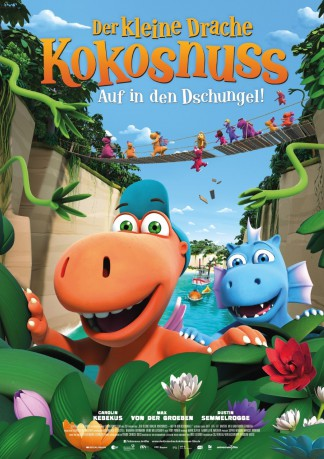

#11388 Der Kleine Drache Kokosnuss - Auf in den Dschungel!
Alternativ: Coconut the Little Dragon 2 Into the Jungle (Englischer Titel)
 
 IMDB-Wertung: 5.8 / 10
IMDB-Wertung: 5.8 / 10  Metascore: 0
Metascore: 0 
This is going to be the best holiday ever. Coconut The Little Dragon is thrilled about going to summer camp with his best friends Oscar and Matilda. But due to wild Water Dragons and carnivorous plants, the adventure he wished for turns out tougher than expected.
Jahr: 2018
Dauer: 80 Minuten
FSK: 0
Land: Deutschland Studio: Universum FilmTonspuren: DTS - ,
Untertitel:
Auflösung: 1080p (1920x1080) Größe: 3543 MB
Genre: Komödie, Abenteuer, Fantasy, Animation/Trick, Familie
Regisseur: Anthony Power
Drehbuch: Mark Slater, Gabriele Walther
Soundtrack: Stefan Maria Schneider
Darsteller:
Datei: X:\Kinder Collections\Kleine Drache Kokosnuss\Kleine Drache Kokosnuss - Auf in den Dschungel!, Der (2018, FSK0, 1920x1080).mkv seit 26.06.2019
Festplatte: Kinder-Filme+Trick
 Alle Filme aus Gruppe 'Kinder Collections\Kleine Drache Kokosnuss'
Alle Filme aus Gruppe 'Kinder Collections\Kleine Drache Kokosnuss'